Before taxiing, the crew gets a taxi clearance from ATC such as "taxi to holding point runway 09 via M, K, A". On an unknown airport, following it on the chart is where mistakes happen: a wrong turn, a runway crossed without clearance. This page draws the route of the clearance on the airport map, lists the runways it crosses and stops it at the runway holding point.
The real A380 has no taxi routing: its OANS (the airport map on the ND) only lets the crew place green flags and white crosses (FCOM DSC-34-10-70-20), and MSFS has no datalink taxi clearance (D-TAXI). So the route is built on the flyPad, and the cockpit displays stay as the FCOM describes them. On the A380, the accepted route is marked on the OANS with those green flags (section 9).
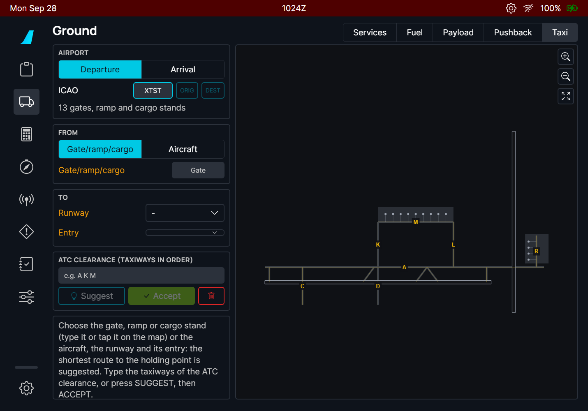
| Part of the page | What it does |
|---|---|
| AIRPORT | Departure or Arrival, the ICAO code, ORIG / DEST buttons, the number of stands on the map. |
| FROM | Where the taxi starts: a gate / ramp / cargo stand (departure), a runway exit (arrival), or the aircraft. |
| TO | Where it ends: the runway and its entry (departure), or the gate (arrival). |
| ATC CLEARANCE | The taxiways of the clearance, in order. SUGGEST fills it with the shortest route, ACCEPT confirms it, the red bin clears the page. |
| Route box | The route as a clearance reads, its length, the taxiways and the runway crossings in red. |
| Map | The airport with the route, the runway entries (cyan), the holding point (amber bar), the aircraft (yellow). Drag to move, buttons to zoom and to fit the route. |
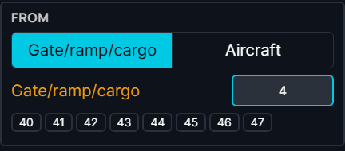
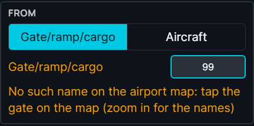
Gate names are found even when they are written differently on the map: "16" finds "016", spaces and dashes do not matter. If nothing matches, the airport map uses another name (for example a letter prefix): tap the gate on the map instead.
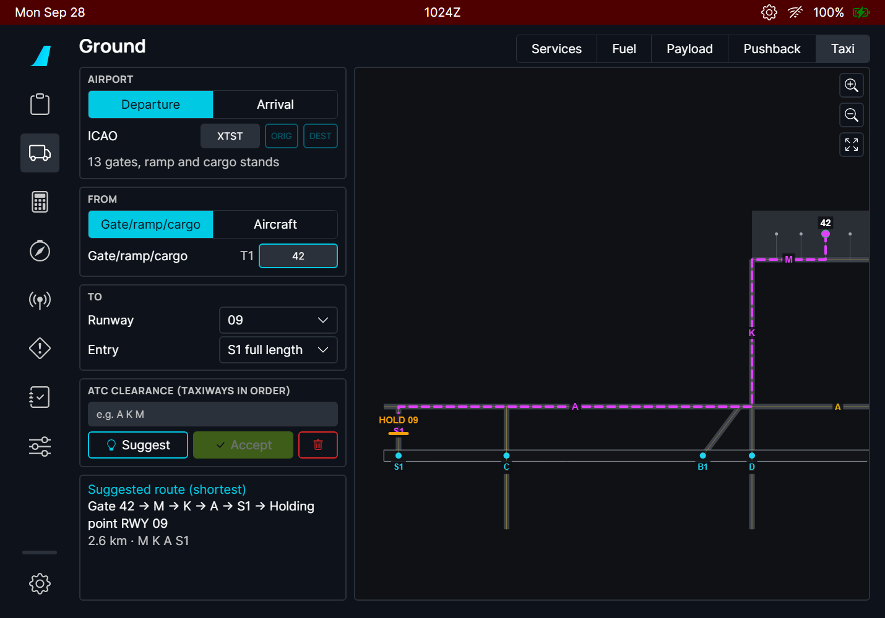
The Entry list shows every taxiway that enters the runway, in order from the threshold. The first one is the full length entry; the others show the runway length remaining from them, to check an intersection departure against your takeoff performance. On the map, the entries of the selected runway are the cyan dots with their names.
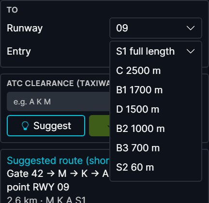
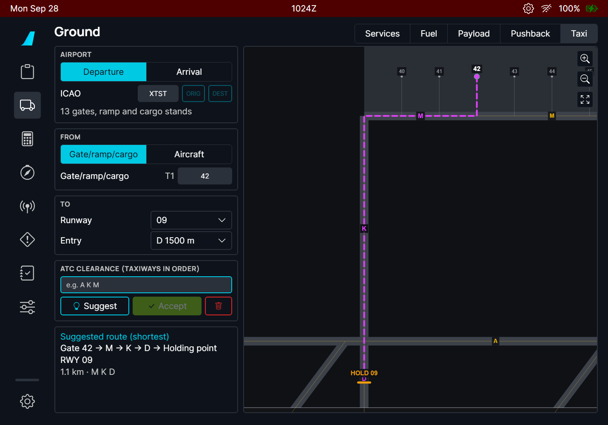
Type the taxiways of your clearance in the order ATC gives them, separated by spaces (commas and dashes work too). The route then follows them strictly, in that order:
SUGGEST copies the taxiways of the suggested route into the clearance field: a quick start when ATC clears you along the obvious way. ACCEPT confirms the route: the line turns solid. Any change (gate, runway, entry, clearance) takes the acceptance away.
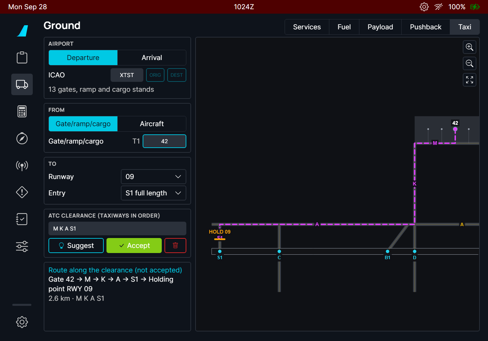
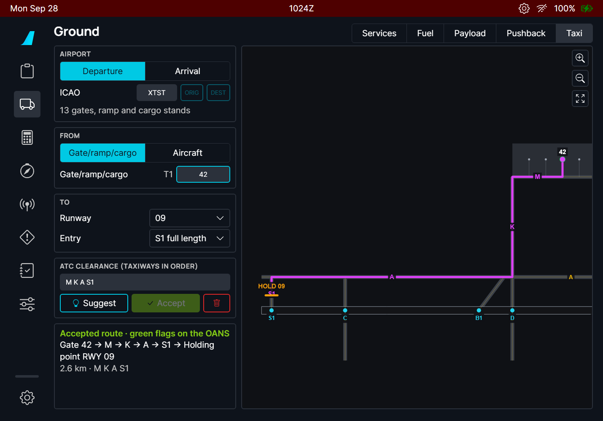
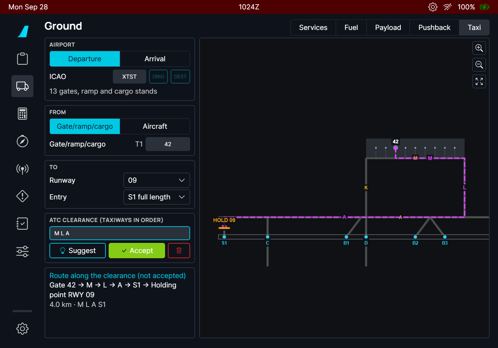
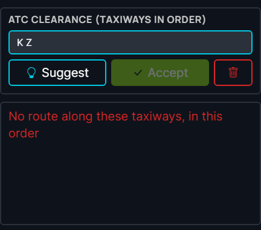
Every runway the route crosses is circled in red on the map with its name, and listed in red under the route ("Crossing runway 01/19"). A runway crossing always needs its own ATC clearance: stop at the holding point before it and ask if you do not have it.
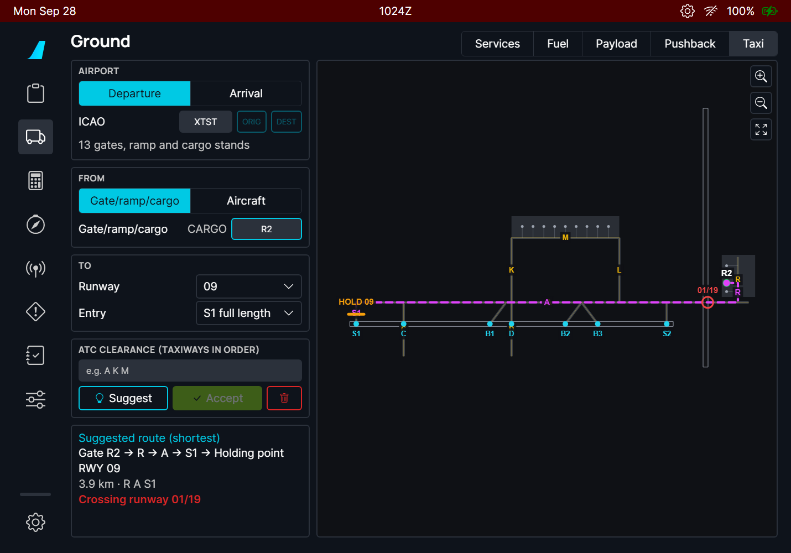
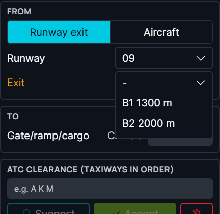
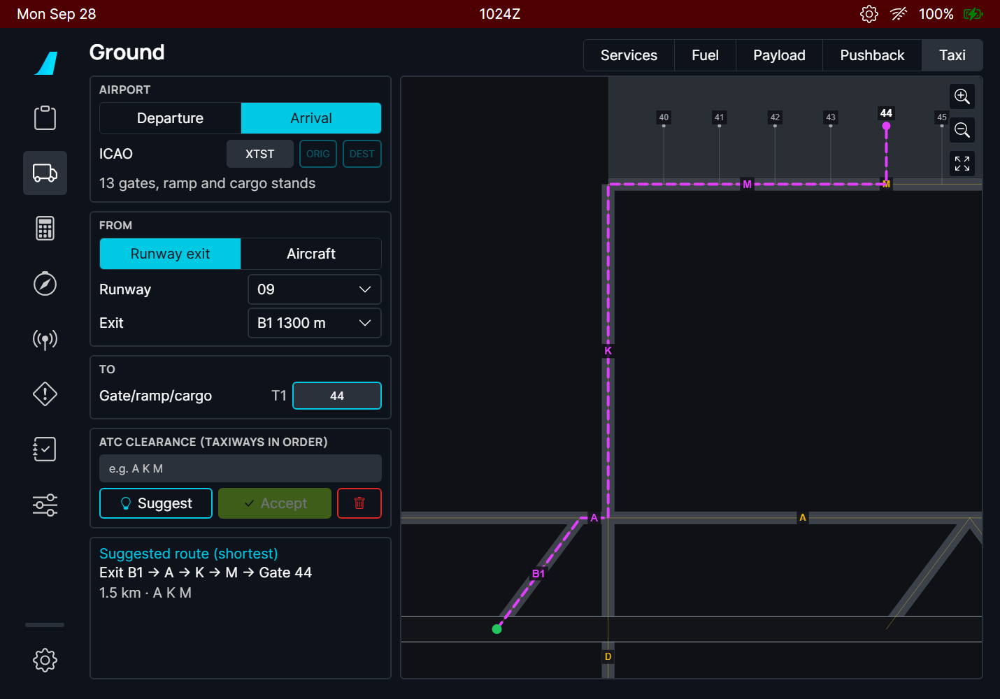
Choose Aircraft in FROM to start the route where the aircraft is, for example after a pushback, or when ATC changes the route while you taxi. The page takes the position when you select it; press Update to take it again. The route starts on the taxi line nearest to the aircraft and prefers its heading: it does not start by turning back if there is a way ahead.
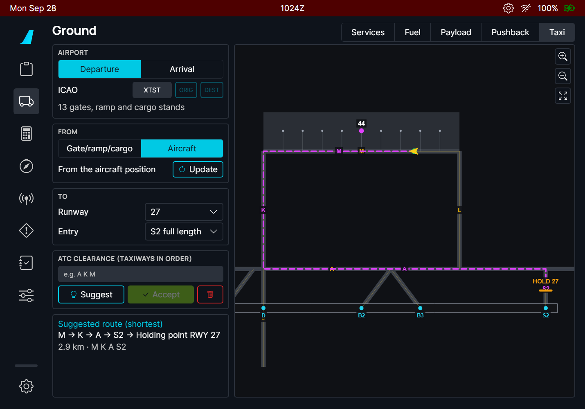
"The aircraft is not at this airport" means the aircraft is more than 8 km from the airport of the page.
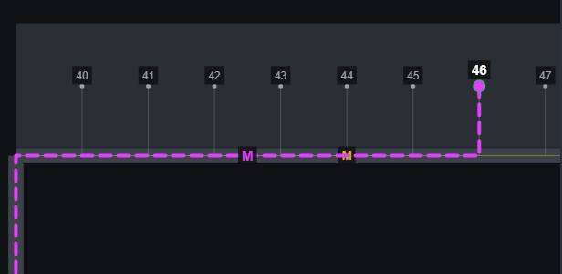
When you accept the route on the A380 flyPad, green flags appear on the OANS (the airport map on the ND) at the start of each taxiway of the route and at the gate or holding point. They are the crew flags of the FCOM ("to locate or mark a given point on the airport"), so you can remove them like any flag: click one and DELETE, or ERASE ALL SYMBOLS in the ND menu. Flags you placed yourself are never touched.
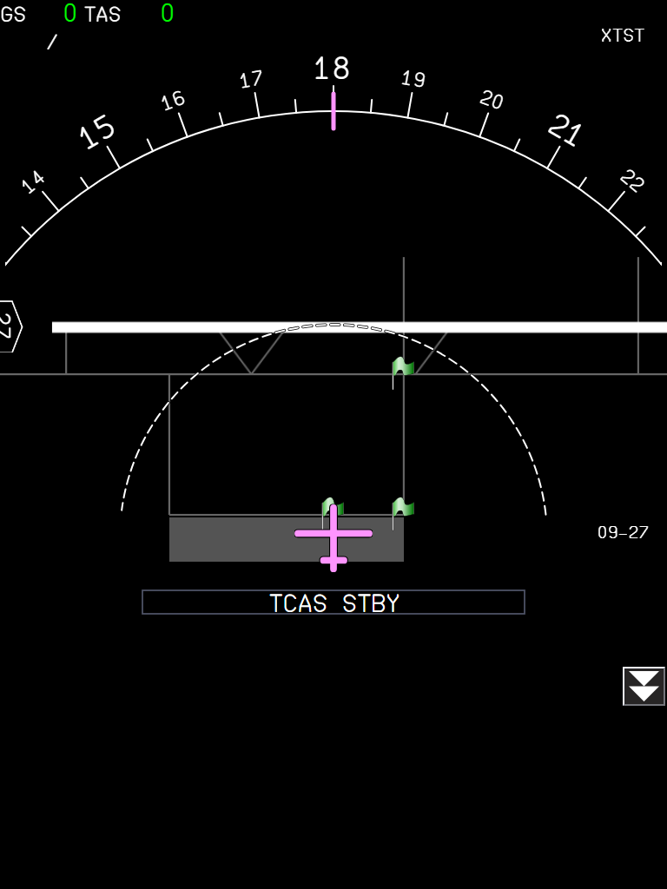
| Situation | What you should see |
|---|---|
| Airport entered, nothing else | The airport map, amber labels on the inputs still missing, the help text in the route box. |
| Start and end chosen | The suggested route, dashed, with its clearance text, length and crossings. |
| SUGGEST | The clearance field holds the taxiways of the suggested route; the route is a preview (dashed). |
| Clearance typed | The route follows the typed taxiways in order (dashed until accepted), or the red message "No route along these taxiways, in this order". |
| ACCEPT | Solid line, "Accepted route" in green (A380: green flags on the OANS). |
| Any input changed after ACCEPT | Back to a preview: accept again. |
| Departure to a runway with holding position lines | The route stops at the HOLD bar before the runway. |
| Runway without holding position lines on the map | The route ends on the runway entry itself and the box says "Runway 09" instead of "Holding point RWY 09". |
| The route crosses a runway | Red circle with the runway name on the map, red "Crossing runway" line. |
| Aircraft start, aircraft far from the airport | "The aircraft is not at this airport"; no route. |
| Leaving the page and coming back | Everything is kept, except an Aircraft start: press Aircraft or Update again. |
| Limitation | Why | What to do |
|---|---|---|
| Needs a Navigraph account. | The airport map (taxi lines, stands, holding points) exists only in the Navigraph airport database; MSFS does not give it to the aircraft. | Link your account in the flyPad settings. |
| Closed taxiways, one-way taxiways and NOTAMs are unknown. | The airport database has the lines painted on the ground, not their status of the day. | Type the taxiways of the ATC clearance: the route follows them. |
| The suggestion is the shortest route, not the usual one. | Airports have preferred flows (ATC habits, one-way loops) that are not in the data. | Always check against the clearance and the airport chart. |
| Some real airports have gaps in their taxi lines. | A lead-in line may stop a few metres short of the taxi line. Gaps up to 15 m between parts that are otherwise not connected are joined; larger ones are not. | If "No taxi line of the airport map connects the start to the end" appears, choose another start (the nearest taxiway, or the aircraft) or end. |
| Gate names follow the airport database. | The database may use names that differ from the gate signs. | Tap the gate on the map. |
| No route on the A380 OANS, only flags. | The A380 FCOM has no taxi route display; the flags are the FCOM way to mark points on the airport map. | - |
| The aircraft position is taken once. | The route is a plan to check, not a moving map that follows you. | Press Update after a change. |
| What you see | Why | What to do |
|---|---|---|
| SUGGEST and ACCEPT are greyed | There is no route yet: the gate is not found (amber label, no terminal next to the name), or the runway / entry / exit is missing. | Pick the gate from the suggestion buttons or tap it on the map; check the amber labels. |
| "No such name on the airport map" | No stand of the map has this name. | Tap the gate on the map. |
| "No taxi line of the airport map connects the start to the end" | The start and the end are on parts of the map that are not connected. | Start from the nearest taxiway (Aircraft), or choose another gate or entry. |
| "No route along these taxiways, in this order" | A taxiway of the clearance is misspelt, missing, or they do not connect in that order. | Check the clearance; press SUGGEST to see the names the map uses. |
| "Not in the Navigraph airport database" | Navigraph has no airport map for this airport. | - |